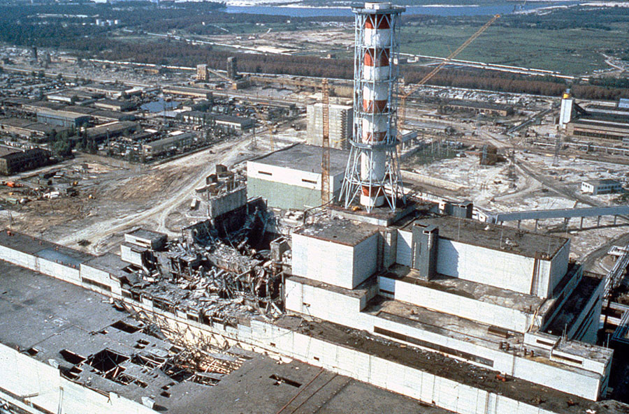
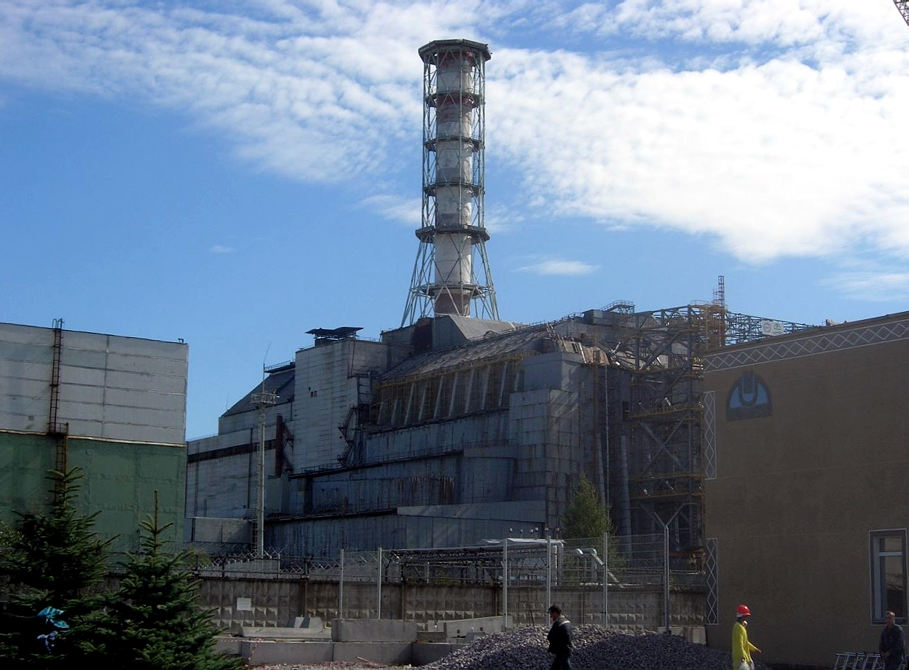

Nuclear Reactions
What is it?
Nuclear reactions are reactions that occur when a high energy particle collides with the nucleus of an atom. These particles can be protons, neutrons, alpha particles, photons, or any particle that can overcome the strong nuclear force. The strong nuclear force is the force within the nucleus of an atom that holds it together.

The particle must overcome the strong nuclear force within the nucleus
As the size of the nucleus increases, this force dramatically decreases, which explains why heavier elements are more unstable and are radioactive. With normal chemical reactions, only valence electrons are shared/exchanged, and the nucleus of the atom remains unchanged. On the other hand, nuclear reactions occur at the nucleus, completely changing the properties of both the particles in the reaction. If, however, the nucleus remains unchanged after the interaction with another nucleus or particle, then the process is referred to as an elastic collision rather than a nuclear reaction.

As the size of the atom increases, it becomes more and more unstable
Different Types of Nuclear Reactions
There are two main types of nuclear reactions: Fusion and Fission. Fusion reactions are when two or more nuclei are combined to form one or more different nuclei and other particles, producing energy along the way. Fission reactions are the opposite, where the nucleus of an atom is split into lighter nuclei while producing a high amount of energy and other alpha particles.

The process of nuclear fusion and fission visualized
Where do they occur?
Nuclear Fusion
The most common example of nuclear fusion can be found right here in our solar system. The sun is a gigantic nuclear reactor, constantly undergoing the process of nuclear fusion. Stars generate energy by first converting Hydrogen into Helium through nuclear fusion. When a star has depleted its Hydrogen supply, it then converts Helium to heavier elements like Oxygen and Carbon. The energy generated by nuclear fusion is what counteracts the star's gravitational force and keeps it stable. However, when nuclear fusion reaches Iron, the energy generated is no longer higher than the energy it takes to undergo nuclear fusion. After the star depletes its supply of lighter elements, it can no longer produce enough energy to support itself and it collapses upon itself in a spectacular supernova.
Although we can't directly harness the power of a star, fusion reactors which are based on this concept are already being developed. The idea is to use the energy produced from nuclear fusion to heat water, producing steam that can then be used to generate electricity. This technology is still under development, meaning real-world implementation can still be very far down the line.
Nuclear Fission
Unlike nuclear fusion, nuclear fission can be found all around us. There are hundreds of nuclear power plants around the globe, powering the world around us through nuclear fission. Nuclear power plants generate around 10% of the total power in the world. Nuclear power plants are a lot more efficient than burning fossil fuel, with the added benefit of releasing less pollution into the environment.

The nuclear power plant in Pickering, Ontario
The way nuclear power plants generate power is by splitting Uranium atoms, specifically Uranium-235. Uranium-235 is extracted from the more common and abundant isotope Uranium-238, which undergoes an enrichment process that produces a lot of nuclear waste. The Uranium-235 then undergoes nuclear fission, which produces enough energy to heat water into steam. The steam is then able to power turbines that generate electricity.
Health and Safety
General Health Concerns
Generally, nuclear power plants are far away from most residential areas and have been extensively tested to prevent failures. However, long term unprotected exposure to the radiation generated by the reactor can cause considerable harm to a person. Ionizing radiation is a type of radiation that strips electrons from atoms, thus ionizing them. Unstable isotopes that break down in a nuclear reactor emit ionizing radiation as they decay. Power plants today are constructed with materials that absorbs the radiation emitted in order to protect those working in or around it.
Accidents
Although a nuclear power plant is designed with safety as the number one priority, accidents do occur. Most notably, the Chernobyl disaster. In April of 1986, the Chernobyl nuclear power plant located in northern Ukraine suffered a meltdown. To this day, it is still considered the worst nuclear disaster in history. Ironically, the accident occurred during one of the safety tests on the reactor. The purpose of the test was to simulate a power outage in order to observe how power could be supplied to the cooling system by the backup generators. The results, as we know now, were disastrous. After the power of the reactor was lowered, it suddenly dropped again to near-zero levels, before being restored to its previous levels. By that time, the reactor had reached a highly unstable condition. The cool water, combined with the extremely hot fuel, started generating an enormous amount of steam, which greatly increased the pressure within the reactor. As the pressure increased more and more with no ways of relieving it, the reactor exploded. The resulting fire and nuclear material started a chain reaction, causing many other explosions as well as filling the air with radioactive materials.
The Chernobyl reactor after meltdown
The aftermath of the disaster was even greater than the initial meltdown. Due to radioactive materials being exposed to the atmosphere, the environment around the reactor was heavily contaminated. Over 100,000 people were evacuated in a 30 kilometer radius around the site of the accident. Those who were exposed to a lethal dose of radiation were dead within days or weeks. There was an estimated 4000 deaths caused by radiation-induced cancer. In 1986, the government of Ukraine began building a sarcophagus around the site of the accident to prevent any further radiation from coming in contact with the atmosphere. Scientists estimate that the area around Chernobyl will not be habitable for up to another 20,000 years.
The Chernobyl sarcophagus as seen in 2006
Social and Environmental
Societal Impacts
Whether they realize it or not, a lot of people rely on nuclear energy. In 2018, around 20% of electricity in the US was generated by nuclear reactors. And in Europe, nuclear accounted for almost a quarter of the continent's power. Although many people's lives are dependant on nuclear power plants, no one wants to be near one. The danger of a potential accident occurring at the power plant is enough to drive most people away from the area. After the Fukushima disaster in 2011, debates surrounding the safety of nuclear power has once again become relevant. The question of whether society benefits from this newfound technology can only be answered with the test of time.
Addressing environmental problems
Using nuclear power over other traditional methods has many benefits. Compared to fossil fuel, it is over 8000 times more efficient in generating power. This means that only a small fraction of nuclear reactors need to be built to generate the same amount of power as fossil fuel. In research conducted by NASA, it was found that
"Without nuclear power, it will be even harder to mitigate human-caused climate change and air pollution. This is fundamentally because historical energy production data reveal that if nuclear power never existed, the energy it supplied almost certainly would have been supplied by fossil fuels instead (overwhelmingly coal), which cause much higher air pollution-related mortality and GHG emissions per unit energy produced."
It is evident that although nuclear power still generates waste, its byproducts are considerably less than that of burning fossil fuel.
Negative effects on the environment
Unlike fossil fuel, nuclear reactions do not produce CO2 when operating, but this is only partly true. Because nuclear reactions consume Uranium, the process of mining this metal still emits CO2. The Uranium also still needs to be transferred to the reactor. Further, there is no efficient way to dispose of the nuclear waste generated by nuclear reactors. Right now, excess Uranium is buried underground or stored in warehouses in metal containers. This way of storing radioactive waste will not be feasible in the near future, as Uranium has a half-life of 704 million years.

Nuclear waste being stored in containers at a warehouse
Storing nuclear waste is one thing, but safely storing them is another. If an earthquake was to occur near a nuclear waste storage facility, the results could be catastrophic. The radioactive material could then contaminate nearby bodies of water, destroying any ecosystems that depend on it. We have to ask ourselves, "Do the benefits of nuclear power outweigh the risks?" and only then can we get the full perspective of this newly harnessed power.
Conclusion
What does this mean?
Nuclear reactions are fundamentally different from chemical reactions. Its power, if used properly can lead to endless possibilities. Humans have come a long way from burning wood to utilizing the power of stars. Nuclear power can propel our understanding of atoms and stars to the next level, but it also contains the power to destroy everything we know.